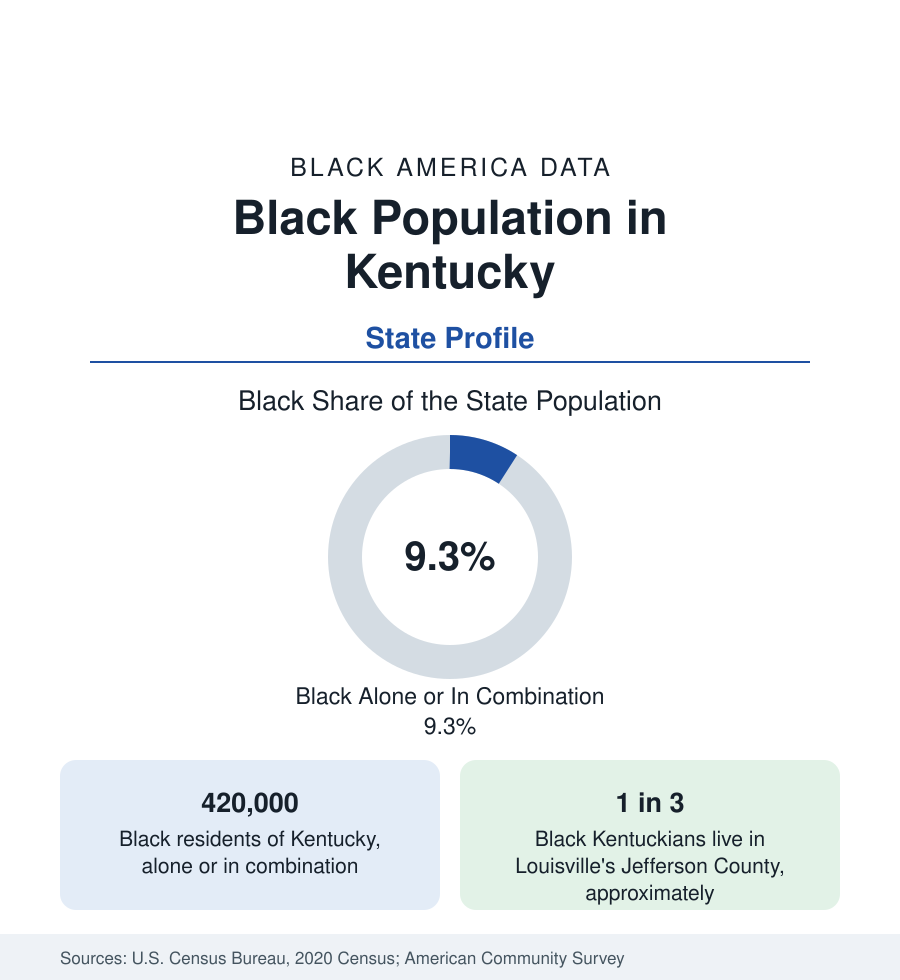

Black Census
Black Population in Kentucky: Louisville and the Border State
About 420,000 Black Kentuckians — nearly one in ten residents — centered on Louisville, in a state that stayed in the Union while holding slavery. The census profile.

Kentucky holds about 420,000 Black residents — Black alone or in combination — nearly one in ten of its people, with Black alone at about 361,000, or 8 percent. Kentucky was the border state that held slavery until the Thirteenth Amendment ended it — it never seceded, and its enslaved population was emancipated by constitutional amendment rather than proclamation — and its Black geography reflects that in-between history: a substantial old population in the Bluegrass and the Louisville falls city, thin settlement in the mountain east. This article profiles the population in the census data.
Louisville: The Falls City
Louisville and its Jefferson County hold roughly a third of all Black Kentuckians — about 140,000 people, more than a fifth of the consolidated city-county — and the community reaches to the city's founding, built by enslaved and free Black labor on the Ohio River's falls portage. West Louisville, the historic Black district of neighborhoods like Russell, Parkland, and Shawnee, remains majority Black and holds the community's institutions, while the modern population spreads through the south and east county suburbs and across the river into southern Indiana's New Albany and Jeffersonville. Louisville's Black professional infrastructure — Simmons College of Kentucky, the state's small private HBCU; the Louisville Urban League tradition; a large hospital and logistics workforce (the UPS Worldport hub is among the region's largest employers) — makes it one of the Ohio Valley's significant Black metros, a profile continued in the cities section's river-city coverage.
The Bluegrass and the Rest
Lexington, the state's second city, is roughly a seventh Black — a community formed around the Bluegrass's hemp, tobacco, and horse industries, in a region whose enslaved population was among the state's densest. Frankfort, the small capital, holds Kentucky State University, the state's public HBCU, in a city about a sixth Black. The western Jackson Purchase and the Pennyrile hold scattered farm-belt communities; the eastern mountains — Appalachian Kentucky — record the state's smallest Black shares, in many counties under 1 percent, among the lowest county figures in the nation, a distribution drawn by a coal economy that recruited Black miners in the early twentieth century and then contracted. Covington and Newport, across from Cincinnati, and Paducah and Owensboro on the river, complete the urban map at modest shares.
Composition and Change
Black Kentucky is stable in count and share, growing modestly in the Louisville and Lexington suburbs and declining in the western farm counties. Its indicators track the border-state pattern: income below national Black averages, attainment rising through the two metros' universities and the state's community college system, and health outcomes carrying the state's overall difficult profile — Kentucky's high chronic-disease burdens fall on its Black population at magnified rates, as the public health section's state data show. The foreign-born share is small but growing in Louisville, which holds one of the South's notable refugee-resettlement communities, including Congolese and other African populations now visible in the Jefferson County survey data.
Reading the Kentucky Numbers
The Migration State, Sending and Receiving
Kentucky's place in the migration data is double. It was a sending state of the first rank: Black Kentuckians left up the Illinois Central and the Louisville & Nashville lines for Chicago, Detroit, Cincinnati, Indianapolis, and Cleveland in the migration decades, and the birthplace data show Kentucky-born Black elders across the industrial Midwest to this day — Louisville's own Black population was replenished and reshaped by the same currents from the state's farm counties and from Mississippi and Alabama below it. The modern flow runs both directions through the same cities: Louisville's Black growth in the estimates includes return migrants and their descendants moving down the corridor their grandparents climbed, alongside the refugee and African immigrant communities giving the Jefferson County data their new layer. The result is a population in continuous exchange with the Midwest — which is why Kentucky's Black statistics and Chicago's and Cincinnati's so often move together.
The state's two metros also divide its Black professional geography cleanly: Louisville's logistics, health care, and bourbon-and-horse tourism economies on the west, Lexington's university and equine industries on the east, with Kentucky State's public mission and Simmons's small urban one carrying an institutional load out of proportion to their enrollments.
Kentucky's profile is the border-state case in this section: a Black population neither Deep South in scale nor absent as in the mountain interior — one in ten Kentuckians, concentrated in one river metropolis and a set of small cities, with an institutional depth (two HBCUs, a major metro community) beyond what its share suggests. The county tables carry the local account, from Jefferson County's 140,000 to the eastern counties where the Black population is counted in the hundreds.
More in Black Census
The Black Population of the United States: Size, Definitions, and Distribution
The Black population of the United States totals 52.8 million — 15.4 percent of the nation. How the Census Bureau defines and counts the population, and where it lives.
Black Median Household Income in the United States
Black median household income stands at $56,490 in the Census Bureau's annual income report — how the figure is measured, how it compares, and what drives it.
The Black Poverty Rate: Levels, Children, and the Long Trend
The official Black poverty rate is 17.1 percent — against 11.1 percent nationally and 7.7 percent for non-Hispanic White Americans. How poverty is measured and what the data show.
Source: U.S. Census Bureau, 2020 Census; American Community Survey; Population Estimates Program.